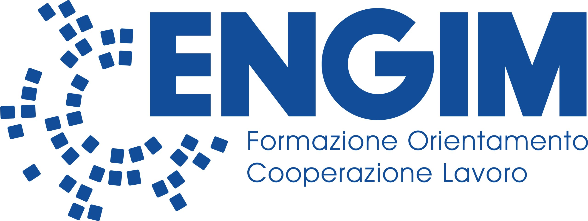

×CIAOUn quartiere, un laboratorio per il futuro
10 domande veloci per capire da dove partiamo — cosa sono le STEM, quanto le conoscete già. Anonimo al 100%: nessun nome, solo risposte.
Avvia il quiz inizialeOgni tema ha una spiegazione e, in fondo, un'attività interattiva.
"Mirafiori: A Neighborhood, A Lab for the Future" nasce da un problema concreto: un quartiere ricco di potenzialità ma segnato da un divario digitale che rischia di trasformarsi in un divario di opportunità per i suoi giovani. Il progetto è promosso da ENGIM Piemonte con il sostegno di Stellantis Philanthropy, per il triennio 2026-2028.
Non solo teoria: ecco gli strumenti che troverete nei laboratori pratici.
Per trasformare un'idea in un oggetto reale, strato dopo strato.
Per provare un ambiente o un prodotto prima di realizzarlo davvero.
Le stesse tecniche di ripresa e montaggio usate dai creator.
Per scrivere, progettare e verificare contenuti insieme a un'IA.